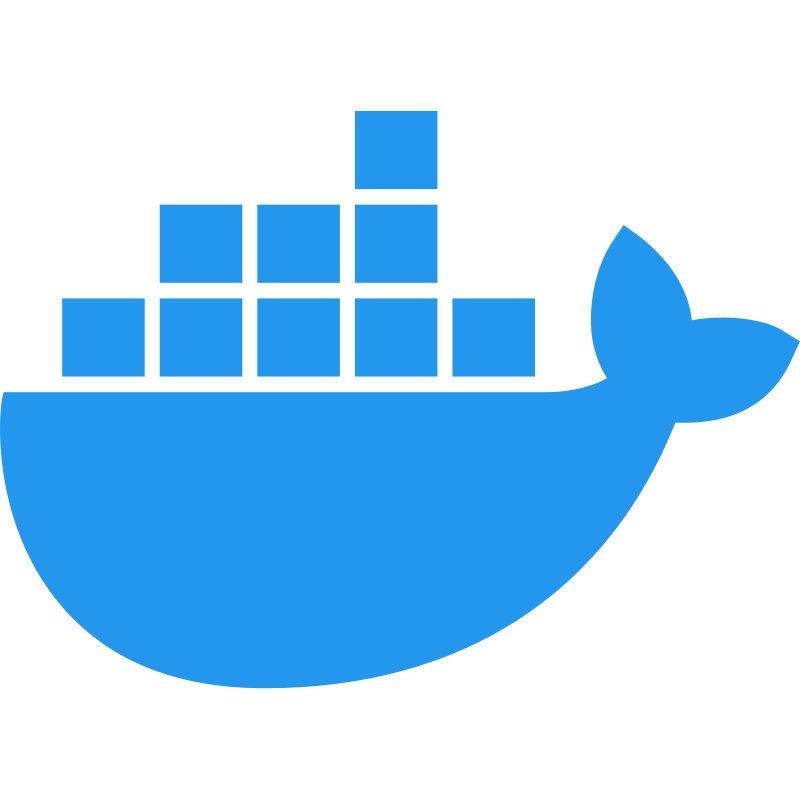

Empezando en macOS
Esta guía cubre los pasos para usar URSIM con Webots en macOS. Los pasos difieren de la guía principal que está orientada a Windows.
Instalaciones previas
Al igual que en Windows, necesitamos los cuatro programas base. En macOS la instalación de cada uno tiene sus particularidades.
1. Git
macOS incluye Git a través de las Xcode Command Line Tools. Para instalarlas, abre el Terminal y ejecuta:
xcode-select --install
Aparecerá una ventana de confirmación; acepta la instalación. Cuando termine, verifica que Git quedó disponible:
git --version
2. Python
macOS puede traer una versión antigua de Python. Descarga la versión más reciente de Python 3 desde python.org e instala el paquete .pkg. Al terminar, verifica la instalación:
python3 --version

3. Webots
Descarga el instalador .dmg para macOS desde cyberbotics.com. Abre el archivo descargado y arrastra Webots a la carpeta de Aplicaciones.
4. Docker Desktop
Descarga Docker Desktop para macOS desde docker.com. Elige la versión correcta según tu Mac:
- Apple Silicon (chips M1, M2, M3, M4): descarga el instalador para Apple Chip.
- Intel: descarga el instalador para Intel Chip.
Instala el .dmg y abre Docker Desktop al menos una vez para completar la configuración inicial. Docker Desktop debe estar corriendo antes de continuar.

Empecemos
Abrir el Terminal
En macOS el terminal se abre con Spotlight: presiona ⌘ Cmd + Barra espaciadora, escribe Terminal y presiona Enter.
También puedes encontrarlo en Finder → Aplicaciones → Utilidades → Terminal.
Crear la carpeta de trabajo
Elige una ubicación para los archivos del proyecto. En este ejemplo usaremos /Users/TuUsuario/ursim-webots. En el terminal ejecuta:
mkdir ~/ursim-webots
cd ~/ursim-webots
Clonar el repositorio
Estando dentro de la carpeta, clona el repositorio:
git clone https://github.com/semillero-ares/ursim-webots.git .
Configurar el entorno
En macOS no existe el archivo setup.bat (que es exclusivo de Windows). Ejecuta los siguientes pasos manualmente en el terminal:
1. Instalar los paquetes de Python:
python3 -m pip install --upgrade pip
python3 -m pip install -r requirements.txt
2. Crear la red virtual de Docker:
docker network create -d bridge --subnet 192.168.0.0/24 --gateway 192.168.0.1 dockernet
Si el comando falla con un error de red ya existente (
network with name dockernet already exists), la red ya fue creada anteriormente y puedes continuar con el siguiente paso.
3. Iniciar el contenedor de URSIM:
cd ursim
docker compose up -d
Si todo salió bien, verás un mensaje similar a este:
[+] Running 1/1
✔ Container ursim Started
Ahora puedes acceder a URSIM desde el navegador en: http://localhost:6080/vnc.html
Encontrar la IP del Mac para RealVNC
Si quieres conectarte al URSIM desde un dispositivo móvil usando RealVNC (ver guía de VNC), necesitarás conocer la IP de tu Mac en la red WiFi.
Opción A — Desde el terminal:
ipconfig getifaddr en0
El comando imprime directamente la dirección IPv4, por ejemplo: 192.168.1.20.
Opción B — Desde Configuración del Sistema:
- Abre
Configuración del Sistema(⌘ Cmd+Barra espaciadora→ "Configuración del Sistema"). - Ve a Wi-Fi.
- Haz clic en Detalles... junto a la red a la que estás conectado.
- En la pestaña TCP/IP encontrarás la Dirección IPv4.
IMPORTANTE: En cada conexión a la red WiFi, la dirección IP puede cambiar.
Detener el simulador
Cuando termines de trabajar, puedes detener el contenedor de URSIM con:
cd ~/ursim-webots/ursim
docker compose down